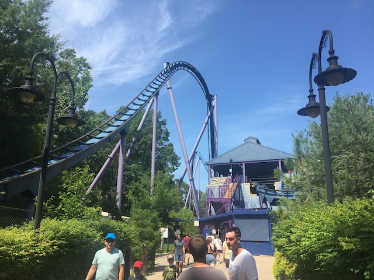
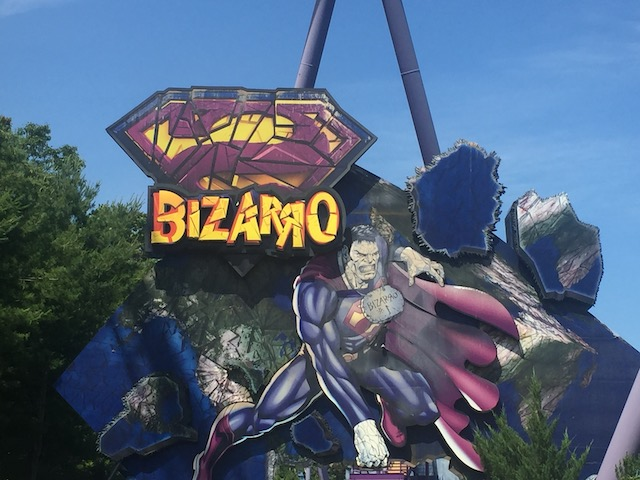

| |
Medusa Review
We're here at Six Flags Great Adventure. Today's ride we'll be reviewing for you is Medusa (both times I went to SFGAdv, it was Bizarro. So all the photos I have of the ride are from when it was Bizarro). When you hear the loud obnoxious airhorn blow, say goodbye to the floor and away you go! After a small dip, you go straight to the lifthill. And then you climb. You then reach the top. You get a nice view of the car safari as you twist into a drop. You accelerate. Faster and Faster you go! By now, you're traveling at about 60 mph (I have no idea what the speed is. That was just a rough estimante). And then you soar up into a loop. Up and around 360 degrees. You get some nice hangtime in the loop, but at the bottom, you're traveling back at your original speed, but then you soar up into a dive loop. Once you've reached the point of going upsidedown, you then level back out and regain your speed. And then what's coming up is the best part of the ride. The part that makes even the toughest man giggle like a schoolgirl. The Heartline Spin! The force of the Heartline Spin just twirls us and gives a ride before bringing you back to ground level. And then it's up into a cobra roll. We rise upsidedown once, twist to the right. Twist back upsidedown to the right and come out the same way you entered. And then we rise up into a midcourse brake. Luckily, this midcourse brake isn't that hard so you just slide off and keep on rolling down into another slightly twisted drop. Then you head straight for a ground hugging helix. You spend just enough time to appreciate the grass before you're thrown into the airtime hill. While it's not much, it's still fun. And then you're thrown into the first corkscrew. And then you swoop straight into a nice turn. And that turn just leads you into the final corkscrew. Enjoy the twisty upsidedown goodness while it lasts because after this, there's not much else. A little twisty track and a small curve just brings you back to the station. While it's not quite as good as Dominator, it's still a damn good ride. Enjoy it while you're at Six Flags Great Adventure, even if you've been on it's West Coast Parking Lot Twin. =)
8/10
Location: Six Flags Great Adventure
Medusa opened in 2000
It was rethemed as Bizarro in 2009
It reverted back to Medusa in 2022
Built by: B&M
Last Ridden: June 18, 2022
I have ridden this exact same ride at the following parks.
Six Flags Magic Mountain
Medusa Photos




Home
|